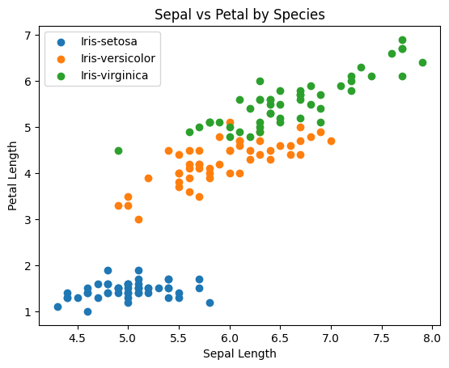
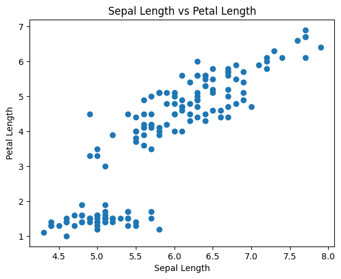
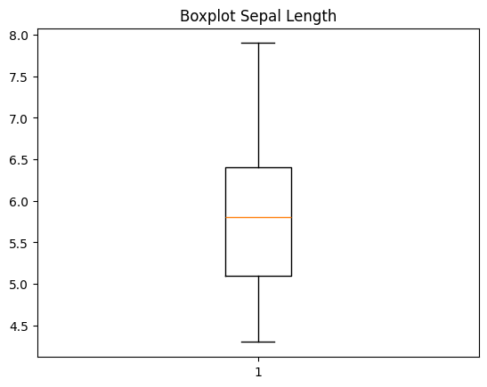
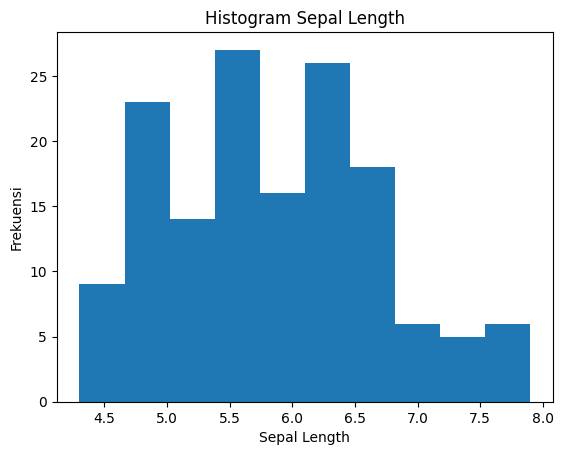

import matplotlib.pyplot as plt
plt.scatter(df["petal_length"], df["petal_width"])
plt.xlabel("Petal Length")
plt.ylabel("Petal Width")
plt.title("Scatter Plot Iris")
plt.savefig("images/scater.png.png")
plt.show()
---------------------------------------------------------------------------
NameError Traceback (most recent call last)
Cell In[1], line 3
1 import matplotlib.pyplot as plt
----> 3 plt.scatter(df["petal_length"], df["petal_width"])
4 plt.xlabel("Petal Length")
5 plt.ylabel("Petal Width")
NameError: name 'df' is not defined
df["sepal_length"].corr(df["sepal_width"])
---------------------------------------------------------------------------
NameError Traceback (most recent call last)
Cell In[2], line 4
1 import pandas as pd
2 from scipy import stats
----> 4 df["sepal_length"].corr(df["sepal_width"])
NameError: name 'df' is not defined
import pandas as pd
from scipy import stats
df = pd.read_csv("IRIS.csv")
print(df.head()) # contoh untuk cek apakah data terbaca
sepal_length sepal_width petal_length petal_width species
0 5.1 3.5 1.4 0.2 Iris-setosa
1 4.9 3.0 1.4 0.2 Iris-setosa
2 4.7 3.2 1.3 0.2 Iris-setosa
3 4.6 3.1 1.5 0.2 Iris-setosa
4 5.0 3.6 1.4 0.2 Iris-setosa
import pandas as pd
# Pastikan file IRIS.csv ada di folder kerja saat ini
df = pd.read_csv("IRIS.csv")
# Sekarang df sudah terdefinisi
print(df.head()) # Menampilkan 5 baris pertama untuk memastikan data terbaca
sepal_length sepal_width petal_length petal_width species
0 5.1 3.5 1.4 0.2 Iris-setosa
1 4.9 3.0 1.4 0.2 Iris-setosa
2 4.7 3.2 1.3 0.2 Iris-setosa
3 4.6 3.1 1.5 0.2 Iris-setosa
4 5.0 3.6 1.4 0.2 Iris-setosa
# Korelasi sepal
df["sepal_length"].corr(df["sepal_width"])
# Korelasi semua kolom numerik
df.corr(numeric_only=True)
| sepal_length | sepal_width | petal_length | petal_width | |
|---|---|---|---|---|
| sepal_length | 1.000000 | -0.109369 | 0.871754 | 0.817954 |
| sepal_width | -0.109369 | 1.000000 | -0.420516 | -0.356544 |
| petal_length | 0.871754 | -0.420516 | 1.000000 | 0.962757 |
| petal_width | 0.817954 | -0.356544 | 0.962757 | 1.000000 |
for species in df['species'].unique():
subset = df[df['species'] == species]
plt.scatter(subset['sepal_length'], subset['petal_length'], label=species)
plt.xlabel("Sepal Length")
plt.ylabel("Petal Length")
plt.title("Sepal vs Petal by Species")
plt.legend()
plt.show()

plt.scatter(df['sepal_length'], df['petal_length'])
plt.xlabel("Sepal Length")
plt.ylabel("Petal Length")
plt.title("Sepal Length vs Petal Length")
plt.show()

plt.boxplot(df['sepal_length'])
plt.title("Boxplot Sepal Length")
plt.show()

plt.hist(df['sepal_length'])
plt.title("Histogram Sepal Length")
plt.xlabel("Sepal Length")
plt.ylabel("Frekuensi")
plt.show()

import matplotlib.pyplot as plt
print("Skewness :", df['sepal_length'].skew())
Skewness : 0.3149109566369728
print("Standar Deviasi :", df['sepal_length'].std())
print("Variansi :", df['sepal_length'].var())
Standar Deviasi : 0.828066127977863
Variansi : 0.6856935123042507
print("Q1 :", df['sepal_length'].quantile(0.25))
print("Q2 (Median) :", df['sepal_length'].quantile(0.5))
print("Q3 :", df['sepal_length'].quantile(0.75))
Q1 : 5.1
Q2 (Median) : 5.8
Q3 : 6.4
print("Jumlah data :", df['sepal_length'].count())
print("Rata-rata :", df['sepal_length'].mean())
print("Nilai minimum :", df['sepal_length'].min())
print("Nilai maksimum :", df['sepal_length'].max())
Jumlah data : 150
Rata-rata : 5.843333333333334
Nilai minimum : 4.3
Nilai maksimum : 7.9
df.columns
Index(['sepal_length', 'sepal_width', 'petal_length', 'petal_width',
'species'],
dtype='str')
df = pd.read_csv("IRIS.csv")
df.head()
| sepal_length | sepal_width | petal_length | petal_width | species | |
|---|---|---|---|---|---|
| 0 | 5.1 | 3.5 | 1.4 | 0.2 | Iris-setosa |
| 1 | 4.9 | 3.0 | 1.4 | 0.2 | Iris-setosa |
| 2 | 4.7 | 3.2 | 1.3 | 0.2 | Iris-setosa |
| 3 | 4.6 | 3.1 | 1.5 | 0.2 | Iris-setosa |
| 4 | 5.0 | 3.6 | 1.4 | 0.2 | Iris-setosa |
import pandas as pd